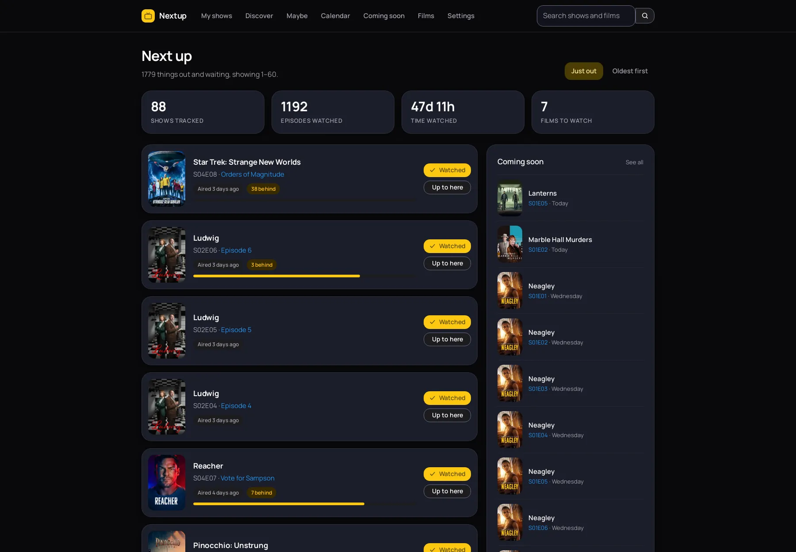
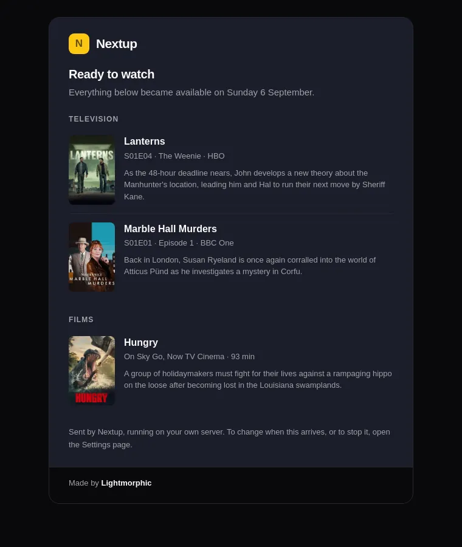
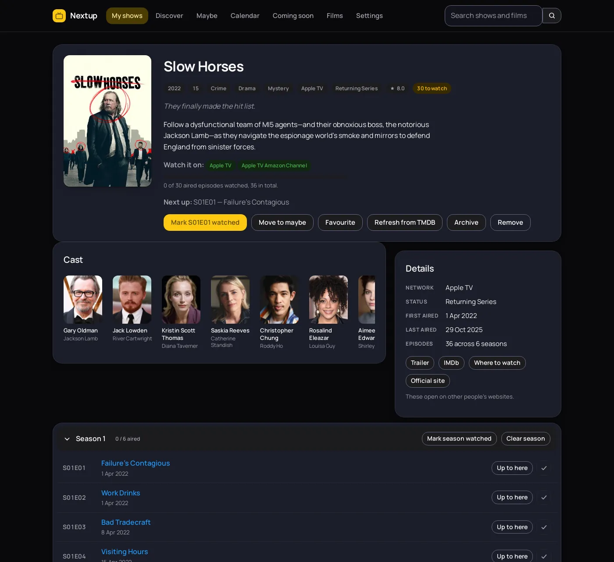
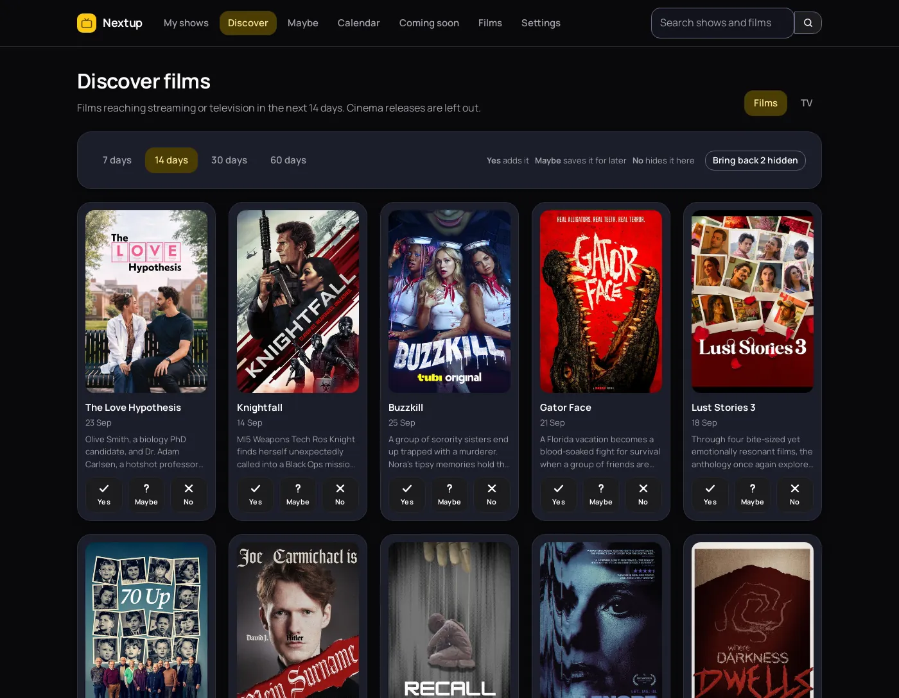
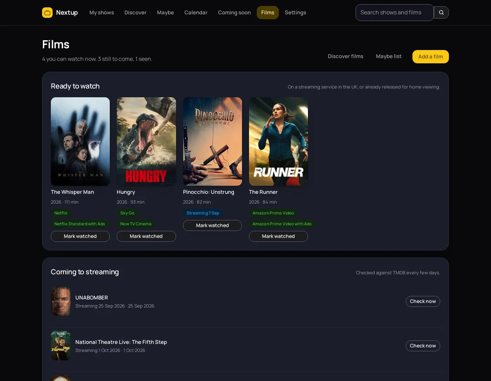
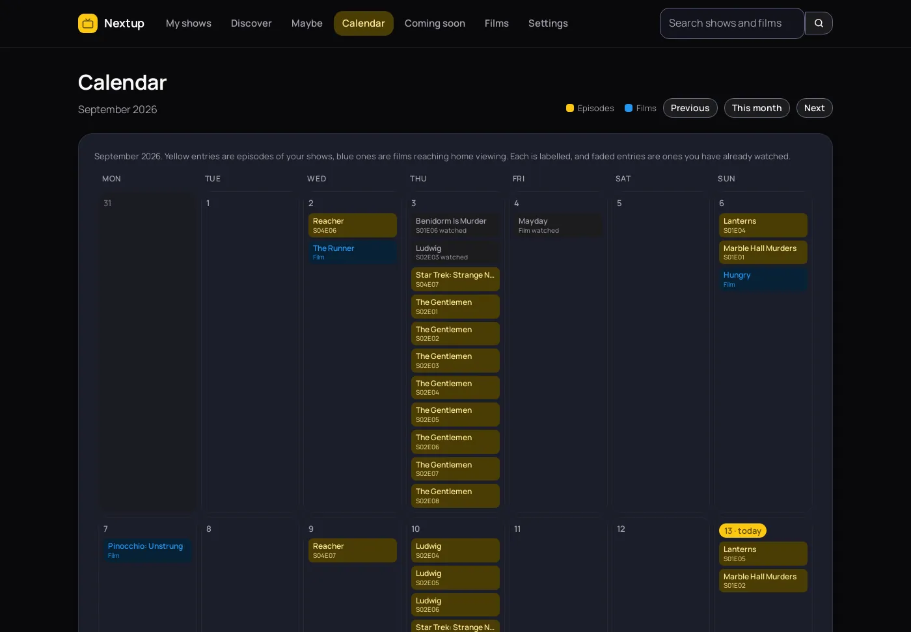
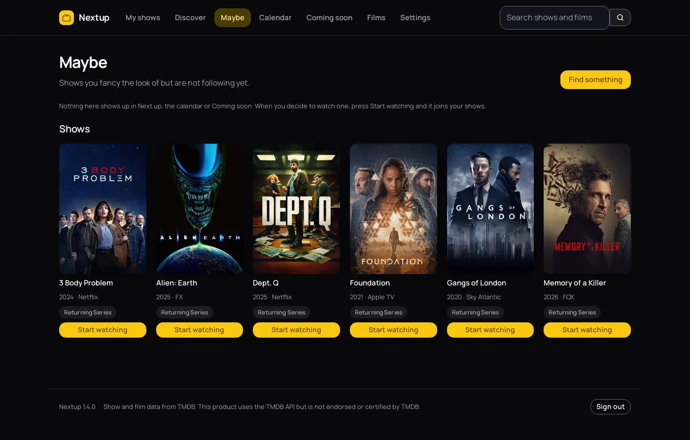

Which episode were you on?
Nextup remembers, for every show you watch, wherever you watched it. It works out what is waiting, tells you when the next one airs, and lets you know when a film you wanted finally turns up on something you already pay for.
Free under the GPL. No account, no tracking, nothing to pay.

One email, every morning
A short message listing what became watchable overnight. The cover of each show and film, a couple of sentences about it, which channel or service it is on, and a link straight to it. If nothing became available, nothing is sent.
A programme that goes out at eleven at night is not really available until the next day, so you tell Nextup how long to wait and it holds things back accordingly. Set the time to the minute. The covers travel inside the message, so it reads properly even with no signal.


Catching up without forty clicks
Pick the last episode you remember watching and press Up to here. Everything before it is ticked in one go. That is how you get a show you started three years ago back under control.
Every episode has its own page too, with the still, the synopsis, the air date, the guest cast and the director. Episodes that have not aired cannot be ticked by accident, and the progress bar counts only what has actually been broadcast, so a show is never quietly unfinished because of a Christmas special.
Yes, no, or maybe
Discover shows you what is arriving and asks one question about each of it. A tick puts it on your list. A question mark parks it on the maybe list. A cross sends it away and it does not come back.
The film list asks for home releases rather than cinema ones, so it answers the question someone who does not go to the cinema is actually asking. A cross deletes nothing: the title still turns up in a search, and one button brings back everything you dismissed.


Films, and when you can actually watch them
A cinema date is no use if you wait for things to reach a service you already have. Nextup reads the digital, physical and television release dates a film has been given, prefers the UK one, and shows you that instead.
It also names which UK services carry a film right now. Subscription, free and ad-supported ones are listed. Rental and purchase are left out, because the question is what you can put on tonight without paying for it twice.
The month at a glance
Every tracked show on the day it airs, in yellow, with films reaching home viewing in blue. Each is labelled, so the two are told apart without relying on colour, and anything you have watched fades back.

Not everything is a commitment
There is a difference between the shows you follow and the ones you have half an eye on. The maybe list keeps the second sort out of your dashboard, out of the calendar and out of the email, until you decide.

Nothing leaves your server
Most trackers want an account. This one has nowhere to send anything, so it is worth being exact about what it does and does not do.
- Artwork is fetched once and then served by Nextup itself. Covers are cached in your data directory, so no page in the app ever points your browser at a third-party host, and the email carries its pictures inside the message.
- The only outbound calls are to TMDB, made by your server, to look up the shows and films you asked for and to ask when a film reaches streaming.
- No analytics, no telemetry, no crash reporting and no third-party scripts, in the app or on this page.
- No account with us, because there is no us. Nextup has no server of its own to phone.
- Two cookies, both yours. One keeps you signed in, one remembers whether you chose light or dark. Neither leaves your server and neither tracks anything.
- One directory to back up. The database, the encryption key and the cached artwork all sit in the folder you mounted.
Running in about five minutes
You need Docker and a free TMDB account.
-
Make the data directory
Nextup runs as a normal user inside the container, user ID 1000, so the folder on the host has to belong to that same ID or the app cannot write to it.
sudo mkdir -p /opt/nextup sudo chown -R 1000:1000 /opt/nextup -
Start it
Save this as
docker-compose.ymland bring it up. It listens on port 4090 unless you change the left-hand number.services: nextup: image: ghcr.io/lightmorphic/nextup:latest container_name: nextup restart: unless-stopped ports: - "4090:8080" volumes: - /opt/nextup:/data environment: TZ: "Europe/London"docker compose up -d -
Sign in and change the password
Open it in a browser and sign in with
adminandnextup. The app keeps telling you off until you change both, which is the idea. -
Add your TMDB key
Make a free account at themoviedb.org, open Settings then API, and copy the API Key for v3 auth. Paste it into the Settings page in Nextup. It is checked against TMDB before it is saved, and encrypted once it is.
-
Add a show and mark your place
Search a title, press Add, then use Up to here on the last episode you watched. From then on the front page is a list of what is waiting, and the morning email starts arriving once you fill in your mail server.
What it deliberately does not do
Worth knowing before you spend those five minutes.
- It does not play anything. No streams, no downloads, no links to either. It is a record of what you watched, wherever you watched it.
- One person, one list. There is a single account. A household sharing it shares one watch history.
- There is no import yet. Coming from another tracker means re-entering your history. The season and Up to here buttons make that quicker than it sounds.
- No push notifications. One email in the morning, or nothing. It will not buzz your phone when an episode lands.
- It is not hosted for you. There is no signup page and no service to join. You run it yourself or you do not run it.
Questions people ask
- Does Nextup play or download anything?
- No. Nextup is a notebook, not a player. It records what you have watched and tells you what is next. It holds no video, links to no streams and downloads nothing except artwork from TMDB.
- Do I need a TMDB API key?
- Yes, and it is free. Make an account at themoviedb.org, open Settings then API, and copy the API Key for v3 auth. You paste it into the Settings page inside Nextup, where it is stored encrypted.
- How does it know when a film reaches streaming?
- TMDB records several release dates for a film, including the digital, physical and television ones. Nextup reads those, prefers a UK date, and falls back to Ireland then the United States. It also lists which UK subscription, free and ad-supported services carry the film, using the JustWatch data TMDB publishes. Rental and purchase are left out.
- Can I keep a list of shows I might watch one day?
- Yes, that is the maybe list. Anything on it keeps its cover and its next air date but stays out of your dashboard, the calendar and the email, so it never makes you look behind on something you never started.
- Can more than one person use it?
- No. Nextup has one account and one watch history. Two people sharing it would share a single list. If you want separate lists, run a second copy with its own data directory.
- What does it cost?
- Nothing. It is released under the GPL version 3, so you can run it, read it and change it. There is no paid tier and no hosted version to buy.
- Where is my data kept?
- In one directory on your own server. A single SQLite database holds your shows and watch history, alongside the encryption key and the cached artwork. Backing up that directory backs up everything.
- How do I update it?
- Run
docker compose pull, thendocker compose downanddocker compose up -d. A plainup -dwill not fetch a newer image on its own. - What is it built with?
- Python and Flask, with SQLite for storage and plain CSS for the interface. There is no JavaScript framework and no build step. The whole thing is small enough to read in an evening.